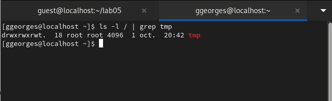
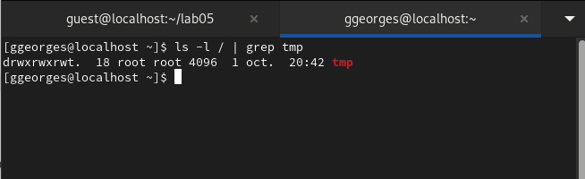

Цель работы: Изучение механизмов изменения идентификаторов, применения SetUID- и Sticky-битов. Получение практических навыков работы в консоли с дополнительными атрибутами. Рассмотрение работы механизма смены идентификатора процессов пользователей, а также влияние бита Sticky на запись и удаление файлов.
Теоретическое введение
SetUID, SetGID и Sticky - это специальные типы разрешений позволяют задавать расширенные права доступа на файлы или каталоги. • SetUID (set user ID upon execution — «установка ID пользователя во время выполнения) являются флагами прав доступа в Unix, которые разрешают пользователям запускать исполняемые файлы с правами владельца исполняемого файла. • SetGID (set group ID upon execution — «установка ID группы во время выполнения») являются флагами прав доступа в Unix, которые разрешают пользователям запускать исполняемые файлы с правами группы исполняемого файла. • Sticky bit в основном используется в общих каталогах, таких как /var или /tmp, поскольку пользователи могут создавать файлы, читать и выполнять их, принадлежащие другим пользователям, но не могут удалять файлы, принадлежащие другим пользователям.
1 часть: Создание программы
Для начала мы убеждаемся, что компилятор gcc установлен, исолпьзуя команду “gcc -v”. Затем отключаем систему запретов до очередной перезагрузки системы командой “sudo setenforce 0”, после чего команда “getenforce” выводит “Permissive”.
Код программы выглядит следующим образом.

Скомпилируем программу и убедимся, что файл программы был создан командой “gcc simpleid.c -o simpleid”. Выполняем программу simpleid командой “./simpleid”, а затем системную программу id командой “id”. Результаты, полученные в результате выполнения обеих команд, совпадают(uid=1001 и gid=1001).

От имени суперпользователя выполняем команды “sudo chown root:guest /home/guest/lab05/simpleid2” и “sudo chmod u+s /home/guest/lab05/simpleid2”, затем выполняем проверку правильности установки новых атрибутов и смены владельца файла simpleid2 командой “sudo ls -l /home/guest/lab05/simpleid2”(Рисунок 3.8). Этими командами была произведена смена пользователя файла на root и установлен SetUID-бит.

Запускаем программы simpleid2 и id. Теперь появились различия в uid.

Проделаем тоже самое относительно SetGID-бита. Также можем заметить различия с предыдущим пунктом.
 { width=70% }
{ width=70% }
2 часть: Исследование Sticky-бита
Командой “ls -l / | grep tmp” убеждаемся, что атрибут Sticky на директории /tmp установлен. От имени пользователя guest создаём файл file01.txt в директории /tmp со словом test командой “echo”test” > /tmp/file01.txt”. Просматриваем атрибуты у только что созданного файла и разрешаем чтение и запись для категории пользователей “все остальные” командами “ls -l /tmp/file01.txt” и “chmod o+rw /tmp/file01.txt”.
 

От имени пользователя guest2 пробуем прочитать файл командой “cat /tmp/file01.txt” - это удалось. Далее пытаемся дозаписать в файл слово test2, проверить содержимое файла и записать в файл слово test3, стерев при этом всю имеющуюся в файле информацию - эти операции удалось выполнить только в случае, если еще дополнительно разрешить чтение и запись для группы пользователей командой “chmod g+rw /tmp/file01.txt”. От имени пользователя guest2 пробуем удалить файл - это не удается ни в каком из случаев, возникает ошибка.

Повышаем права до суперпользователя командой “su -” и выполняем команду, снимающую атрибут t с директории /tmp “chmod -t /tmp”. После чего покидаем режим суперпользователя командой “exit”. Повторяем предыдущие шаги. Теперь нам удаётся удалить файл file01.txt от имени пользователя, не являющегося его владельцем.